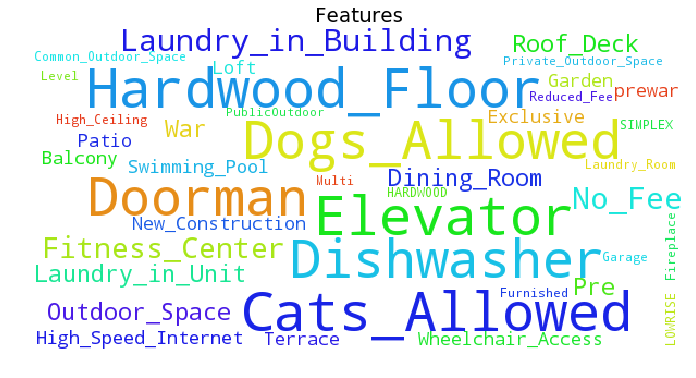
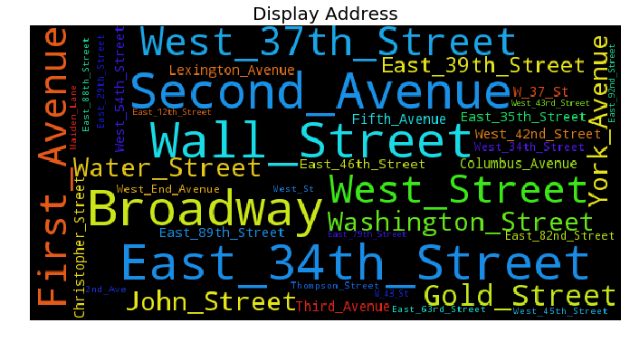

In text analysis, creating word clouds is a useful technique to visualize text data. Words bigger and bolder in size represent a higher frequency of occurance in word corpus. In other word, key words stand out and catch our eyes. The color of the text are generated randomly.
It is very easy to create word cloud in Python using wordcloud package. I will use word cloud to visualize features and display address of rental listings from the Two Sigma Connect Competition in the recent Kaggle Competition.
Import Packages and Read Data
Let's get started by importing the following packages and read the data
import pandas as pd
from wordcloud import WordCloud
import matplotlib.pyplot as plt
train = pd.read_json("../Data/train.json")
Preprocess text data
Next, extract text data from 'feature' and 'display_address' columns in the dataframe
text = ''
text_dispadd = ''
for ind, row in train.iterrows():
for feature in row['features']:
text = " ".join([text, "_".join(feature.strip().split(" "))])
text_dispadd = " ".join([text_dispadd,"_".join(row['display_address'].strip().split(" "))])
text = text.strip()
text_dispadd = text_dispadd.strip()
Create word clouds
plt.figure(figsize=(12,6))
wc = WordCloud(background_color='white',
width=600,
height=300,
max_font_size=50,
max_words=40).generate(text)
plt.imshow(wc)
plt.title("Features", fontsize=20)
plt.axis("off")
plt.show()
Thus we created the word cloud for rental listing features. We get a general sense of words used to describe features of rental listings in our training set. 
We can change the background color of word cloud by setting background_color = 'black' for display_address column.
There are some addresses that appear more frequent in our training set.
